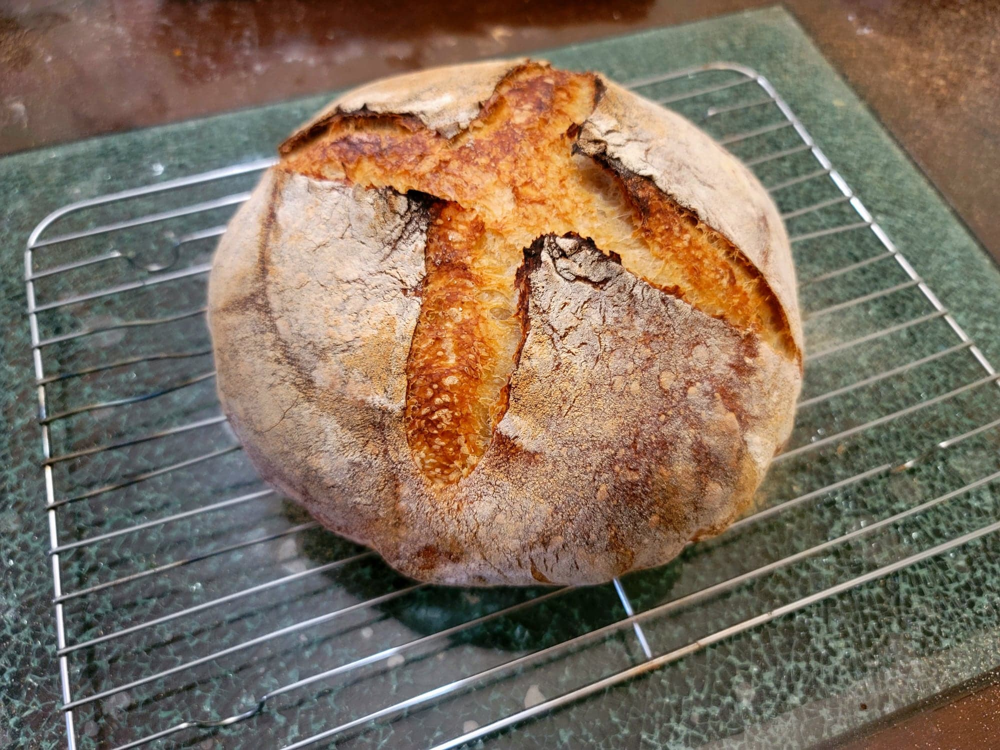

Sourdough Bread

Ingredients:
Levain:
Sourdough:
- 310 g Water, nonchlorinated, about 91 degrees Fahrenheit
- 200 g Levain
- 400 g Flour, unbleached
- 50 g Whole wheat flour, unbleached
- 12 g Salt
Instructions:
- The night before, combine the levain ingredients into a sterilized jar. Cover loosely and mark the height of the mixture with a rubber band.
- After fermenting for about 12 hours, check if the levain has peaked and that it passes the float test. Then combine all of the dough ingredients into a large mixing bowl with a rubber spatula until it forms a shaggy dough. Then use a wet hand to pinch and squeeze until well mixed.
- Place into a warm place to ferment for 30 minutes. Then perform some stretch and folds on the dough and then pick in up a few times to fold itself into a taut ball. Wait another 30 minutes and then do it again. Then let ferment for another 2 hours.
- Heavily flour a work surface and a banneton(optionally flour the banneton with rice flour). Flip the dough onto the work surface and begin to shape the dough into a taut ball. Then transfer to the banneton seam-side up. Cover with a tea towel and let proof for 90 minutes, or until fully proofed (the dough should indent briefly before bouncing back).
- 45 minutes before the dough is ready, place a dutch oven into an oven and preheat to 500 degrees Fahrenheit.
- Dust some parchment paper with cornmeal or semolina. Transfer the dough to the parchment paper seam-side down. Score with a lame to create a seam. Remove the dutch oven from the oven and transfer the dough with the parchment paper into dutch oven. Cover, return the dutch oven to the oven, reduce the heat to 385 degrees Fahrenheit, and bake for about 18 minutes. Then uncover, reduce to 365 degrees Fahrenheit, and bake for another 25 minutes, or until it reads an internal temperature of 205 degrees.
- Remove from oven and allow to cool completely before serving.